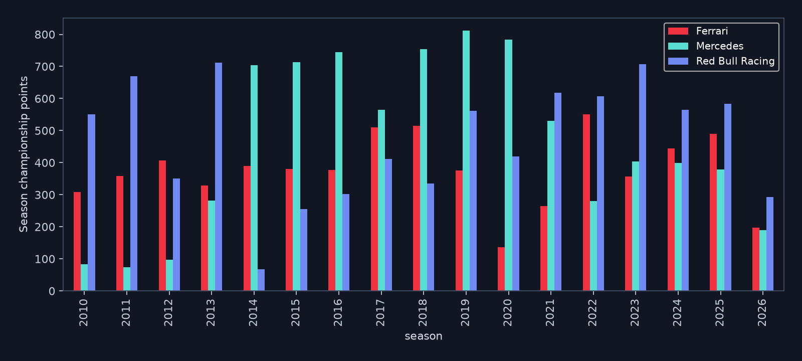
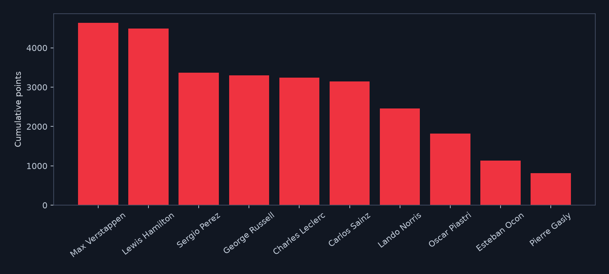
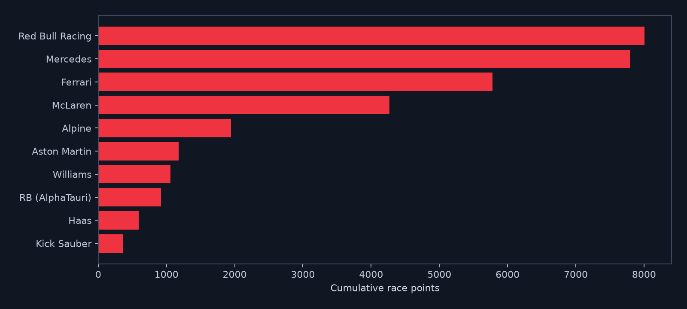
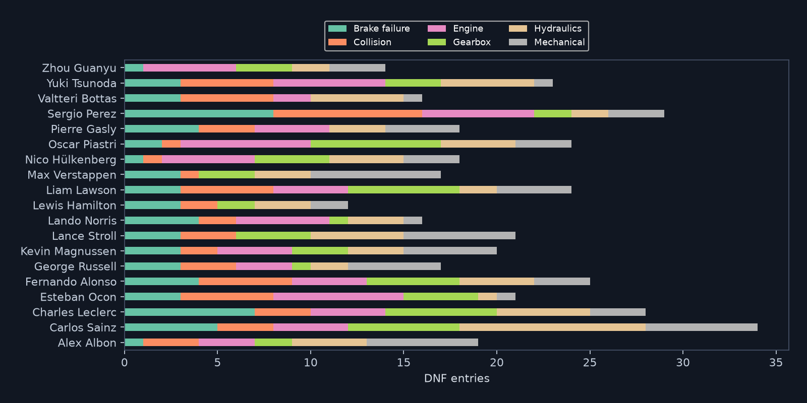
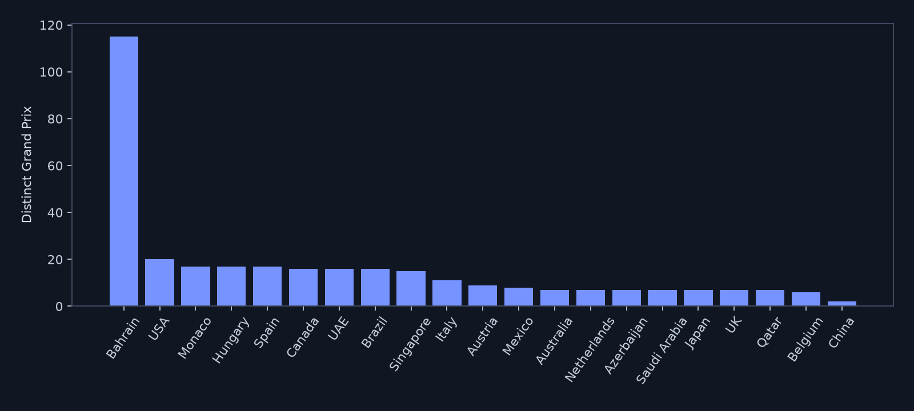
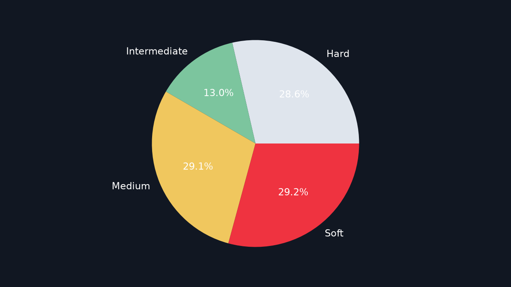

Performance and strategy snapshots
Championship standings
Season-level championship patterns.

Driver performance
Driver results and podium analysis.

Team comparison
Team performance across supplied seasons.

Reliability and non-finishes
Recorded DNF patterns and reasons.

Host-country coverage
Race locations in the supplied records.

Starting tyre compounds
Starting compound only, not full-race tyre usage.

Full analysis report
Read the methodology, data-quality notes, metric definitions and implementation guidance.
Open analysis report (PDF) ↗Data transparency
The source is an educational dataset, not verified historical Formula 1 evidence. The audit flags contemporary drivers appearing in 2010, placeholder qualifying values, and repeated race-driver keys for Carlos Sainz across teams. Host country is not driver nationality.
Coverage: 17 seasons; 29 catalog circuits, 24 represented in race results; data through 2026-08-02.